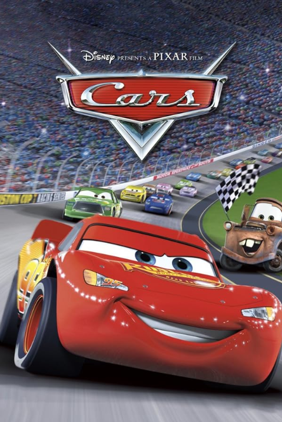

2006
Cars
Flash McQueen, une jeune voiture de course ambitieuse, rêve de devenir un grand champion. Mais un détour inattendu l'amène dans une petite ville de la Route 66, où il rencontre des personnages qui vont bouleverser sa vision de la vie, de l'amitié et de la victoire.
« Une aventure qui lui apprendra que gagner n'est pas tout. »